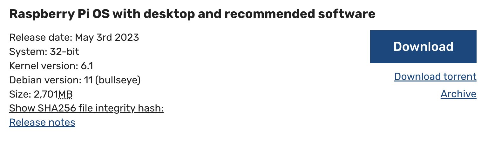
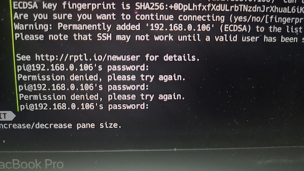
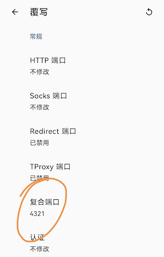
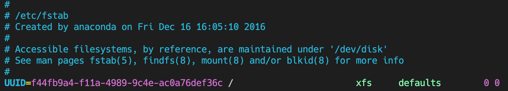
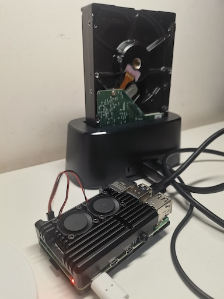

树莓派折腾记（1）：电子宠物养起来了
之前时不时的看网上有人在玩树莓派，可以折腾不少有意思的小项目。说树莓派就是一个大号的单片机，哎，一说单片机我可就不困了，想起上学那会和小伙伴们逛电子元件市场，买来51单片机、电阻、电容、面包板……，在宿舍拿着烙铁焊接，烧录程序，联调测试……。唉！好久没折腾这些玩意了，你别说，手还真的有点痒。为了“忆苦思甜”，同时也为了满足自己的折腾欲，上周终于下定决心买了一个，几番对比后，最终选择的是4B 4G版本。经过一个周末的折腾，电子宠物终于养起来了。
目前折腾的进度:
- 烧录系统
- 配置wifi
- 配置默认用户密码
- 解锁root用户
- 修改软件源
- 配置BT下载
- 配置网盘客户端
- 配置samba
- 配置minidlna
- 安装kodi家庭影院
- 挂载硬盘
- 设置静态IP
下面细说过程和遇到的坑。
烧录系统
烧录挺顺利的。从官网下载系统，链接为https://www.raspberrypi.com/software/operating-systems/，我选择的是Raspberry Pi OS with desktop and recommended software 32位版本。

之所以选择这个版本是因为软件比较全，在折腾的过程中不至于陷入不停安装软件或依赖的地狱，毕竟第一次折腾。没有下载64位系统是因为看网上评论说64位系统刚出，性能和稳定性还不如32位。下载完成后，使用SDFormatter格式化SD卡，使用Win32DiskImager烧录镜像，之所以选择这两个，是因为卖家提供的教程以及网上的资料大都是这两个软件，官方也有烧录软件，回过头看，可能当初使用官方的更好，这是后话，后面会解释。总之，到这里一切顺利。
配置wifi
下面坑来了，因为我没有屏幕也没有网线，因此走的是无屏幕无线启动。按照卖家给的教程和网上的资料，大部分设置wifi的方法都是在烧录好的镜像boot分区新建wpa_supplicant.conf文件，填入以下配置，
country=CN
ctrl_interface=DIR=/var/run/wpa_supplicant GROUP=netdev
update_config=1
network={
ssid="wi-fi name here"
psk="wi-fi password here"
key_mgmt=WPA-PSK
}
我试了好几次，都不行，使用Advanced IP Scanner根本扫描不到，无奈只好向客服求助。客服给了一个url：https://www.pistar.uk/wifi_builder.php，填入wifi名称和密码，可以生成wifi配置文件，拖到boot分区根目录，终于可以连上wifi了。对比了下，它生成的配置zhan长这样，
ctrl_interface=DIR=/var/run/wpa_supplicant GROUP=netdev
update_config=1
ap_scan=1
fast_reauth=1
country=CN
network={
#ssid="wifi name"
ssid=77696669206e616d65
#psk="wifi pass"
psk=0bac15b1c47e8e33b0f81b03be8fc75099109162dac4cda4ef1ef09aec4c461e
id_str="0"
priority=100
scan_ssid=1
}
看起来多了一些配置，而且wifi名称和密码都不是明文了，或许官方为了安全将原来的配置方式废弃了，放在这里给大家避坑。
配置默认用户名和密码
按照原来的教程树莓派开机就有一个默认用户pi，默认密码是raspberry，可是我试了下，已经不行了，提示这个，

查了一下，才发现官方在2022年取消了默认用户和密码，解决办法一是使用官方的烧录工具，有设置用户和密码的步骤，这也是上文说使用官方的烧录软件会更好的原因，因为我都走到这了，不想再走回头路了，因此采用的是另一种方法，在boot分区创建userconf.txt文件，在该文件内输入用户名和密码的密文，格式如下，
用户名:密码密文
以下例子，用户名为pi，密码为raspberry的密文，
pi:$6$4ilokQRQxmURT.py$aJWBQ5yniJJPwV3CKawYJcnSK5JZGhrVZYF3K4omRUFv6KL0MysEH7F4NZRMNMcYF.U3xsQvWrx7ZL2GKxuv.1
正常登录后，不要忘了使用passwd pi改下默认密码。
默认用户和密码也搞定了！
解锁root用户
默认root用户是没有启用的，有时候某些操作是需要root用户的，可以先使用如下命令设置root密码，
sudo passwd root
然后，解锁root用户，
sudo passwd --unlock root
修改软件源
将官方的源替换为国内的源来获取更快的下载速度，
sudo vi /etc/apt/sources.list
注释掉原来的内容，加上国内的源，比如清华的，
deb http://mirrors.tuna.tsinghua.edu.cn/raspbian/ raspbian/ buster main contrib non-free rpi
deb-src http://mirrors.tuna.tsinghua.edu.cn/raspbian/raspbian/ buster main contrib non-free rpi
更改系统源，
sudo vi /etc/apt/sources.list.d/raspi.list
注释原来的源，增加下面的内容，
deb http://mirrors.ustc.edu.cn/archive.raspberrypi.org/ debian/ buster main ui
然后更新仓库及执行升级，
sudo apt-get update
sudo apt-get upgrade
提醒一句，国内源虽快，但是不如官方源完备，我在安装samba服务的时候使用清华源就提示依赖不满足：“The following packages have unmet dependencies:"，最终切回官方源，安装成功。
配置BT下载
BT下载软件我安装的是qbittorrent，原因就是安装简单，一条命令搞定，aria2和transmission都需要一大坨配置，而且也没看出它们能做qbittorrent不能做的点。
sudo apt install -y qbittorrent-nox
安装完成后，使用如下命令启动，
qbittorrent-nox -d
然后，在浏览器中输入你的树莓派ip:8080就可以看到qbittorrent的ui了，使用方法还是比较简洁直观的，支持torrent和磁力链接。
安装完成后，我就迫不及待的找了宫崎骏的《龙猫》的种子，准备试试速度，毕竟想要一个BT下载机也是买树莓派的动机之一。试过之后，有点失望，根本下不动，经过一通谷歌，说是得加tracker，从网上找了几个tracker list，加了之后效果也一般，聊胜于无，后来想了下可能种子太老了，又换了时间更新的几个磁力链接，还是不行。又是一通谷歌百度，说得要公网IP，好吧，先这样将就着用吧。不过后来找了个《流浪地球2》的种子，下起来挺快的。
配置网盘客户端
唉，因为上面BT下载不尽如人意，所以又找了些网盘作为补充。
百度我用的是bypy，阿里用的aliyunpan。百度的非会员速度有限制，下载也就几十K，阿里的没有速度限制，用起来还是挺爽的。
配置samba
本来以为samba很简单，不就是一条apt install命令吗，没想到折腾了好久，原因就是清华的源相比官方源软件有滞后。
初始，执行sudo apt-get install samba，提示，
The following packages have unmet dependencies:
...
Recommends: attr but it is not going to be installed
Recommends: samba-dsdb-modules but it is not going to be installed
Recommends: samba-vfs-modules but it is not going to be
...
谷歌了一番，说是缺少库，结果安装这些库，又提示说缺少另一些库，也就是你安装A，它说你缺少B、C、D，你手动去安装B，结果它又告诉你缺少X、Y、Z。碰到递归依赖的问题，真是头大。
查了好久，试了好多方法，都不行，安装不上，后来鬼使神差的换会原来的官方源，执行sudo apt-get install samba，刷刷刷，装上了。所以，大家如果遇到安装软件不成功的情况，可以换回原来的官方源再试试。
安装上samba，下面就简单了，在/etc/samba/smb.conf添加如下配置
[shared]
path = /home/pi/shared
writeable=Yes
create mask=0777
directory mask=0777
public=yes
browseable=yes
创建samba用户
sudo smbpasswd -a pi
重启服务
sudo systemctl restart smbd
Windows、Mac、Android、Iphone连接samba服务方法各不相同，但是大同小异，大家自行百度，不再赘述。
配置minidlna
首先安装minidlna，
sudo apt-get install minidlna
修改配置文件sudo vi /etc/minidlna.conf
#media_dir=A,/example/audio #音频目录
#media_dir=P,/example/picture #图片目录
media_dir=V,/example/video #视频目录
看网上说还得给这些目录777权限，但是我试了下不给也能观看，我就把这些配置去掉了。就加了一行配置，即上面的视频目录。
启动服务，
sudo service minidlna start
修改配置文件及媒体资源更新，需要强制刷新时，
sudo service minidlna force-reload
如果想取消开机启动，
sudo update-rc.d -f minidlna remove
停止所有minidlna进程，
sudo service minidlna stop
现在一般的电视盒子都可以识别dlna服务，但是我家的腾讯盒子播放视频没声音，不知道为啥，可能盒子太老了。手机、电脑可以使用VLC、Oplayer等软件播放dlna视频。
说到这里，我对minidlna和samba的区别还不是特别明白，感觉差不多，都是去分享某个东西，因此就不献丑总结了。引用一位网友的话，
smb对文件格式的适用性更广，dlna对播放设备的适用性更广。一个是直接共享文件，一个是共享要播放的媒体文件，当然日常使用都差不多，但智能电视这种相关文件管理软件少的设备用dlna蛮方便的。
安装kodi家庭影院
这是我购买树莓派最期待的一个功能了。可惜我家的盒子装不上kodi软件，32位64位都试了，都不行，提示“软件包已损坏”。谷歌了好久，也没查出来原因，我的家庭影院梦戛然而止。万能的网友，有谁遇到类似的问题，如果知道答案，麻烦告知下。
!!2023-09-10更新
换了个盒子，终于可以安装kodi了，安装过程没什么波澜，只是配置刮削器时配置哪个都不好使，无论是官方的TMDB，还是豆瓣，MTime都不行。查了半天资料，说是TMDB被墙了，后面两个停止维护了，尼玛。。。前有狼后有虎，怎么办？突然想到自己手机有VPN，能不能用手机做代理访问TMDB，没想到还真可以！
方法是，打开Clash-设置-覆写-复合端口，设置一个端口，比如4321，然后点击wifi连接，拿到自己的局域网ip，在kodi代理写上上述的ip和端口，开启手机VPN，就可以刮削了。

挂载硬盘
之前买了一个惠普的台式机暗夜精灵，一天软件提示有新的BIOS版本，我点了个“升级”，主板就这样光荣的牺牲了，你敢信？保修期也过了，问了售后换一个主板和买一个新的主机价钱也差不多了，因此就放在角落里闲置了。
树莓派可以挂载硬盘，之前闲置的硬盘终于可以废物利用了。
使用df -h命令查看硬盘挂载位置，发现默认是挂载到了/media/pi/DATA中，如果你想挂载到一个不同的路径，需要先把硬盘卸载下来，
sudo umount /dev/sda1
然后重新挂载到指定目录，
sudo mount /dev/sda1 /home/pi/sda
我在执行这一步时报错了，
The disk contains an unclean file system (0, 0). Metadata kept in Windows cache, refused to mount.
已经安装了ntfs-3g，
sudo apt-get install ntfs-3g -y
sudo modprobe fuse
咋回事呢？又百度谷歌了一番，使用如下命令修复，
sudo ntfsfix /dev/sda1
看起来可以了。
配置开机自动挂载，
sudo vi /etc/fstab

文件有六列：
- 第一列：磁盘分区名/卷标；
- 第二列：挂载点
- 第三列：文件系统类型
- 第四列：缺省设置，一般用defaults，默认硬盘如果找不到会报错，如果不想这样，可以加上nofail
- 第五列：是否备份：0——表示不做dump备份
- 第六列：检测顺序：0——不进行检测；根分区（/），必须填写1，其它的都不能填写1。如果有分区填写大于1的话，则在检查完根分区后，从小到大依次检查下去。
我加的配置如下
/dev/sda1 /home/pi/sda ntfs defaults,nofail 0 0
!!配置更改
根据Arch Wiki的说法，盘符的名字可能随着加载的顺序变化：
If your machine has more than one SATA, SCSI or IDE disk controller, the order in which their corresponding device nodes are added is arbitrary. This may result in device names like /dev/sda and /dev/sdb switching around on each boot, culminating in an unbootable system, kernel panic, or a block device disappearing. Persistent naming solves these issues.
所以，我打算把挂载硬盘的方式换成UUID的方式。先用这个获取硬盘的UUID。
sudo blkid
将原来的配置更换为下面的配置。
UUID="your uuid" /home/pi/sda ntfs defaults,nofail 0 0
设置静态IP
发现有时候树莓派重启会更换IP，静态IP使用起来会更方便。
使用下面命令打开配置，
sudo vim /etc/dhcpcd.conf
在文件中增加如下配置，
interface wlan0 #网卡名
inform 192.168.2.218/24 #树莓派IP
static routers=192.168.2.1 #路由器IP
static domain_name_servers=192.168.2.1 #DNS，这里也是路由器IP
重启，IP就是固定的了。
sudo reboot
!!配置更改
因为上面需要设置路由器IP，但是我发现路由器重启会更换IP，因此换成了如下的配置。
interface wlan0
request 192.168.0.100
发现不管用，又换成了下面的方式，亲测可用。
interface wlan0
inform 192.168.0.100
两种用法的详细解释见stackexchange上这个帖子，里面提到后面一种，也就是inform这种方式可能会有bug，会产生大量的日志，不过有人说已经修复了。
好了，至此，基本上就配置完了，遇到了一些坑，好在基本上都解决了，中间的过程可谓是“痛并快乐着”，但是配置完成的那一刻还是很有成就感的。相信其中遇到的一些问题及解决方法对你有所帮助，接下来，打算买点传感器，折腾折腾嵌入式。
最终的效果，

参考资料：
- https://www.raspberrypi.com/software/operating-systems/
- https://zhuanlan.zhihu.com/p/266495858
- https://zhuanlan.zhihu.com/p/484963590
- https://zhuanlan.zhihu.com/p/457890714
- https://zhuanlan.zhihu.com/p/101616464
- https://zhuanlan.zhihu.com/p/312387581
- https://wiki.archlinux.org/index.php/Persistent_block_device_naming
- https://raspberrypi.stackexchange.com/questions/137443/dhcpcd-conf-inform-vs-static-ip-vs-request-how-should-you-really-setup-a-static
- https://raspberrypi.stackexchange.com/questions/137112/why-does-dhcpcd-flood-my-logs-with-with-useless-messages-when-i-use-the-inform
- https://askubuntu.com/questions/462381/cant-mount-ntfs-drive-the-disk-contains-an-unclean-file-system